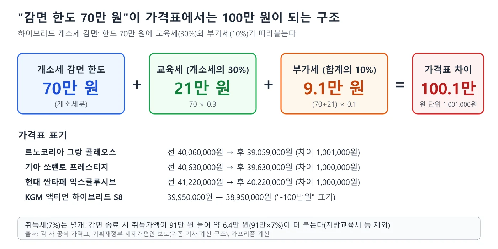
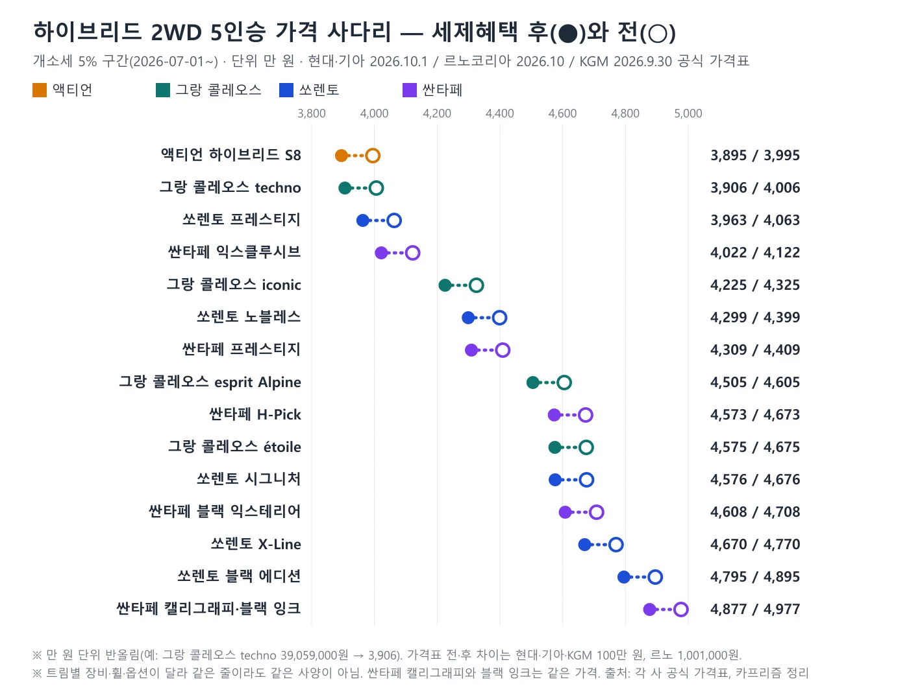
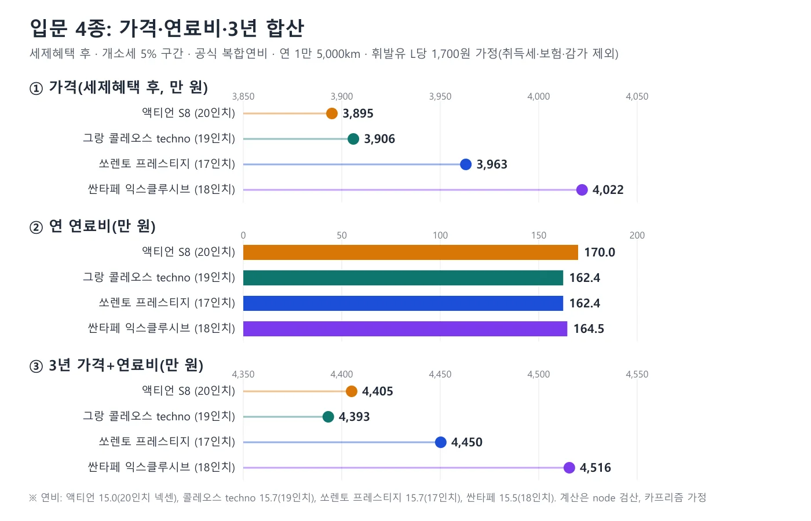
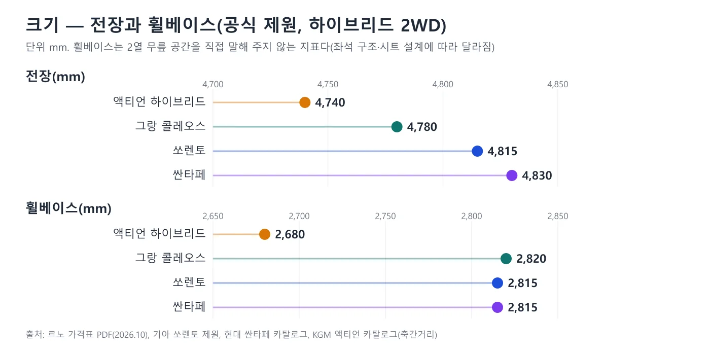
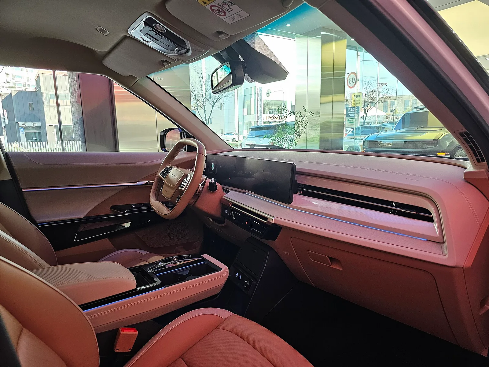

▲ 전시장에 놓인 그랑 콜레오스(위키미디어 기재상 부산 모터쇼 촬영). 사진 속 차의 트림·연식은 확정하지 않는다. 이 글의 입문 techno는 세제혜택 후 3,906만 원이다 ⓒ Damian B Oh, CC BY-SA 4.0, Wikimedia Commons
"입문 4종의 차이는 127만 원." 2026년 10월 현재 공식 가격표에서 하이브리드 2WD 5인승의 가장 싼 트림은 KGM 액티언 하이브리드 S8 3,895만 원, 르노코리아 그랑 콜레오스 techno 3,906만 원, 기아 쏘렌토 프레스티지 3,963만 원, 현대 싼타페 익스클루시브 4,022만 원이다. 모두 하이브리드, 모두 개별소비세 5% 구간(2026년 7월 1일~) 가격표(현대차·기아·KGM 가격표에는 세율 문구가 없어 5%는 정부 일정에 따른 추정이고, 르노코리아는 3.5% 열이 7월호부터 사라진 것으로 교차 확인했다), 모두 친환경차 세제혜택(개소세 감면) 후 값이다. 세제혜택 전으로 맞춰도 3,995만~4,122만 원으로 차이는 같은 127만 원이다. 이 글은 이 4종의 트림 16개를 한 사다리에 올리고, 공식 연비와 크기, 세제 구조, 보증을 같은 기준으로 놓는다. 3열 7인승 비교가 아니라 2열 5인승 하이브리드 가성비 비교다.
이 글은 중형 하이브리드 2열 5인승의 가격표 비교다. 3열 7인승 2.5 터보를 맞춘 글은 같은 값 3열 SUV 3종 비교에, 출시가 대비 인상 폭은 출시가와 10월 가격표 비교에, 하이브리드 감면이 끝나면 가격표가 어떻게 되는지는 2027년 세제 대입 기사에 있다. 액티언의 트림 구성은 액티언 단일 트림 기사, 그랑 콜레오스의 월별 판매와 가격 추이는 그랑 콜레오스 월별 판매 기사에서 따로 다뤘다.
1. 비교의 규칙 — 같은 세금, 같은 파워트레인, 같은 인승
가격표는 네 가지를 맞춰야 서로 뺄 수 있다. 첫째 세율이다. 승용차 개별소비세는 2025년 1월 3일부터 2026년 6월 30일까지 3.5%였고 7월 1일부터 5%로 돌아갔다(정책브리핑 2025년 12월 26일, 비즈월드 2025년 1월 6일 보도). 현대차·기아·KGM 가격표에는 세율 문구가 없어 5%는 정부 일정에 따른 추정이다. 다만 르노코리아 가격표 PDF는 6월호까지 "개소세 인하 가격" 열(3.5% 가격)을 따로 실었다가 7월호부터 그 열이 사라졌고, 이는 5% 환원과 맞는다. 둘째 파워트레인이다. 네 모델 모두 하이브리드로 한정했고 가솔린은 뺐다. 셋째 구동·인승이다. 2WD 5인승으로 맞췄다. 그랑 콜레오스와 액티언은 가격표에 3열(6·7인승) 선택지가 없고, 쏘렌토·싼타페는 5인승이 기본이라 같은 줄에 놓을 수 있다. 넷째 세제혜택 열이다. 가격표는 "세제혜택 전"과 "후"를 함께 싣는다.
📍 "세제혜택 후"는 무엇이고, 70만 원과 100만 원은 어떻게 다른가
하이브리드 개소세 감면은 대당 70만 원 한도다. 이 70만 원에 교육세(개소세의 30%, 21만 원)와 부가세(합계의 10%, 9.1만 원)가 따라붙으므로 가격표에서는 70+21+9.1=100.1만 원이 내려간다. 현대·기아·KGM은 이를 만 원 단위로 반올림해 정확히 100만 원 차이로 적고, 르노코리아는 원 단위(1,001,000원)로 적는다. 즉 "감면 한도 70만 원"과 "가격표 100만 원"은 같은 감면을 다른 층(개소세분 대 교육세·부가세 포함)에서 본 말이다. 기존 2027년 세제 대입 기사와 같은 구조·같은 표기를 쓴다. 하이브리드 취득세 감면은 이미 끝나 별도 감면이 없다는 점은 그 기사가 인용한 세계일보 보도에 따른 것이며, 이 글은 법령을 직접 확인하지 않았다.

▲ 감면 한도 70만 원이 가격표에서는 100.1만 원이 되는 구조. 현대·기아·KGM은 100만 원, 르노는 1,001,000원으로 표기한다 ⓒ 카프리즘 제작(각 사 공식 가격표 기반)
2. 가격 사다리 — 3,895만 원에서 4,877만 원까지 16개 트림
네 모델의 하이브리드 2WD 5인승을 세제혜택 후 가격이 싼 순서로 줄 세웠다. 가격은 만 원 단위로 반올림했다(그랑 콜레오스 techno 39,059,000원은 3,906만 원). 옵션과 취득세·등록비는 뺀 소비자가격표 값이다.
| 순위 | 모델·트림 | 세제혜택 전 | 세제혜택 후 | 공식 복합연비(km/L) | 비고 |
|---|---|---|---|---|---|
| 1 | 액티언 하이브리드 S8(단일 트림) | 3,995 | 3,895 | 15.0(20인치) | 옵션 포함 최대 약 4,310만 원(후) |
| 2 | 그랑 콜레오스 techno | 4,006 | 3,906 | 15.7(19인치) | 5인승 |
| 3 | 쏘렌토 프레스티지 | 4,063 | 3,963 | 15.7(17인치) | 빌트인 캠 장착 시 15.3 |
| 4 | 싼타페 익스클루시브 | 4,122 | 4,022 | 15.5(18인치) | 빌트인 캠 장착 시 15.0 |
| 5 | 그랑 콜레오스 iconic | 4,325 | 4,225 | 15.0 | 2027년형에서 가격 하향·옵션 재구성 |
| 6 | 쏘렌토 노블레스 | 4,399 | 4,299 | 15.7(17인치) | |
| 7 | 싼타페 프레스티지 | 4,409 | 4,309 | 15.5(18인치) | |
| 8 | 그랑 콜레오스 esprit Alpine | 4,605 | 4,505 | 15.0 | 20인치 휠 |
| 9 | 싼타페 H-Pick | 4,673 | 4,573 | 15.5(18인치) | |
| 10 | 그랑 콜레오스 étoile(한정판) | 4,675 | 4,575 | 표에 없음 | esprit Alpine 기반 한정 에디션 |
| 11 | 쏘렌토 시그니처 | 4,676 | 4,576 | 14.8(19인치) | |
| 12 | 싼타페 블랙 익스테리어 | 4,708 | 4,608 | 15.5(18인치) | |
| 13 | 쏘렌토 X-Line | 4,770 | 4,670 | 확인하지 못함 | 가격표에 휠 표기 없음 |
| 14 | 쏘렌토 블랙 에디션 | 4,895 | 4,795 | 14.3(20인치) | |
| 15 | 싼타페 캘리그래피 | 4,977 | 4,877 | 14.4(20인치) | |
| 16 | 싼타페 블랙 잉크 | 4,977 | 4,877 | 14.4(20인치) | 캘리그래피와 같은 가격 |

▲ 세제혜택 후(채운 점)와 전(빈 점) 가격. 점선 구간이 곧 가격표상 감면액이다 ⓒ 카프리즘 제작(각 사 공식 가격표 기반)
사다리를 가르는 것은 모델이 아니라 트림이다. 싼타페 입문 4,022만 원은 그랑 콜레오스 iconic 4,225만 원보다 싸고, 그랑 콜레오스 iconic은 쏘렌토 노블레스 4,299만 원보다 싸다. 반대로 싼타페 H-Pick 4,573만 원은 그랑 콜레오스 esprit Alpine 4,505만 원보다 비싸다. 같은 모델 안에서도 입문과 최상위 사이가 크다. 쏘렌토는 프레스티지 3,963만에서 블랙 에디션 4,795만 원까지 832만 원, 싼타페는 4,022만에서 4,877만 원까지 855만 원, 그랑 콜레오스는 techno 3,906만에서 에뚜알 4,575만 원까지 669만 원이다. 액티언은 단일 트림이라 사다리가 없고 선택 옵션이 가격을 올린다.
체크포인트
- 같은 줄이라고 같은 장비가 아니다. 트림별 기본품목·휠·보조 사양이 달라 이 표는 가격 순위표이지 사양 우열표가 아니다.
- 표의 연비는 가격표·제원표에 적힌 트림별 휠 기준 공식 복합연비다. 같은 트림도 휠이나 빌트인 캠 선택에 따라 바뀐다.
- 싼타페 캘리그래피와 블랙 잉크는 가격이 같다(4,977만 / 4,877만 원).
3. 입문 4종 — 127만 원 안에 줄을 선다
가장 싼 트림끼리 놓으면 순서는 액티언, 그랑 콜레오스, 쏘렌토, 싼타페다. 액티언과 그랑 콜레오스는 11만 원, 그랑 콜레오스와 쏘렌토는 57만 원, 쏘렌토와 싼타페는 59만 원 차이다. 맨 앞과 맨 뒤의 차이는 4,022−3,895=127만 원이고, 세제혜택 전으로 보면 4,122−3,995=127만 원으로 같다. 이는 네 모델 모두 감면이 한도(70만 원)에 걸려 같은 100만 원씩 깎이기 때문이다(르노는 1,001,000원).
| 모델·입문 트림 | 세제혜택 전 | 세제혜택 후 | 맨 앞 대비(후) | 복합연비(km/L) | 전장·휠베이스(mm) |
|---|---|---|---|---|---|
| 액티언 하이브리드 S8 | 3,995 | 3,895 | 기준 | 15.0 | 4,740 · 2,680 |
| 그랑 콜레오스 techno | 4,006 | 3,906 | +11 | 15.7 | 4,780 · 2,820 |
| 쏘렌토 프레스티지 | 4,063 | 3,963 | +68 | 15.7 | 4,815 · 2,815 |
| 싼타페 익스클루시브 | 4,122 | 4,022 | +127 | 15.5 | 4,830 · 2,815 |
입문 트림이 곧 같은 값에 같은 장비를 의미하지는 않는다. 액티언 S8은 하나뿐인 트림이라 20인치 휠, 천연 가죽 퀼팅 시트 패키지, 파워 테일게이트, 12.3인치 디지털 클러스터 등 많은 항목이 기본이다. 그랑 콜레오스 techno는 19인치 휠과 360도 어라운드 뷰, 파노라마 스크린이 기본이고, 쏘렌토 프레스티지·싼타페 익스클루시브는 각각 17인치·18인치 휠이다. 어느 쪽 기본 구성이 풍부한지는 이 글의 범위를 넘으며, 구입 전 각 사 가격표의 기본품목 칸을 직접 비교해야 한다.

▲ 전시장에 놓인 KGM 액티언(위키미디어 기재상 KGM 일산 체험센터). 가솔린·하이브리드 구분은 사진으로 확정하지 않는다. 이 글의 하이브리드 S8은 세제혜택 후 3,895만 원이다. ⓒ Damian B Oh, CC BY-SA 4.0, Wikimedia Commons
중상위 가격대에는 더 흥미로운 겹침이 있다. 싼타페 H-Pick 4,573만 원(45,730,000원), 그랑 콜레오스 에뚜알 4,575만 원(45,749,000원), 쏘렌토 시그니처 4,576만 원(45,760,000원)이 3만 원(30,000원) 안에 있다. 다만 이 셋은 같은 급의 트림이 아니다. 에뚜알은 esprit Alpine 기반의 한정 화이트 에디션으로 20인치 투톤 휠을 쓰고, 쏘렌토 시그니처는 19인치, 싼타페 H-Pick은 18인치 휠이다. 가격이 같다는 것과 장비가 같다는 것은 다른 이야기이므로, 이 구간은 "예산 4,570만 원대에서 고를 수 있는 세 트림" 정도로 읽는 것이 맞다.

▲ 기아 쏘렌토(MQ4). 사진만으로는 하이브리드 여부와 연식을 확정할 수 없고, 현행 2027년형과 외관이 다를 수 있다. 이 글의 쏘렌토 하이브리드 시그니처는 세제혜택 후 4,576만 원이다. ⓒ Damian B Oh / Wikimedia Commons, CC BY-SA 4.0
4. 공식 연비와 연료비 — 앞선 11만 원은 1년 반이면 뒤집힌다
입문 트림의 공식 복합연비는 쏘렌토 프레스티지 15.7, 그랑 콜레오스 techno 15.7, 싼타페 익스클루시브 15.5, 액티언 15.0km/L다(각 사 가격표·제원표, 트림별 기본 휠 기준). 가정은 연 1만 5,000km 주행, 휘발유 L당 1,700원이다(휘발유 값은 공식 수치가 아닌 가정이며 달라지면 비례해 변한다). 연간 연료비는 15,000÷연비×1,700원으로 계산했다(node 검산).
| 모델·입문 트림 | 가격(후) | 복합연비 | 연 연료비 | 3년 가격+연료비 | 순위 |
|---|---|---|---|---|---|
| 그랑 콜레오스 techno | 3,906만 | 15.7 | 162.4만 원 | 4,393만 원 | 1 |
| 액티언 S8 | 3,895만 | 15.0 | 170.0만 원 | 4,405만 원 | 2 |
| 쏘렌토 프레스티지 | 3,963만 | 15.7 | 162.4만 원 | 4,450만 원 | 3 |
| 싼타페 익스클루시브 | 4,022만 | 15.5 | 164.5만 원 | 4,516만 원 | 4 |

▲ 입문 4종의 가격(후)·연 연료비·3년 가격+연료비. 취득세·보험·감가는 제외한 가정 계산이다 ⓒ 카프리즘 제작(공식 연비·가격표 기반)
값이 가장 싼 액티언은 연비가 15.0이라 연료비가 연 170.0만 원으로 그랑 콜레오스보다 7.6만 원 더 든다. 가격 차이 11만 원(3,906−3,895)을 연 7.6만 원으로 나누면 약 1.4년, 17개월이다. 17개월이 지나면 그랑 콜레오스 techno의 3년 합산(4,393만 원)이 액티언(4,405만 원)을 12만 원 앞선다. 쏘렌토 프레스티지와 그랑 콜레오스 techno는 연비가 같아(15.7) 가격 차 57만 원이 그대로 3년 차이로 남는다. 이 계산은 공식 신고 연비 기준이며 실제 연료비 격차는 주행 환경에 따라 더 작거나 클 수 있다.
중상위 트림은 휠이 커지면서 연비가 내려간다. 쏘렌토는 시그니처(19인치) 14.8, 블랙 에디션(20인치) 14.3이고, 싼타페 캘리그래피·블랙 잉크(20인치)는 14.4다. 같은 가정에서 연 연료비는 쏘렌토 시그니처 172.3만 원, 블랙 에디션 178.3만 원, 싼타페 20인치 177.1만 원으로 입문 트림보다 8만~16만 원 더 든다. 공식 연비는 한국에너지공단 표시연비를 직접 열람하지 않고 제조사 가격표·제원표·카탈로그에 실린 정부 공인 표준연비를 사용했다.
5. 크기 — 5인승에서 휠베이스 차이는 140mm
공식 제원상 전장은 액티언 4,740mm, 그랑 콜레오스 4,780mm, 쏘렌토 4,815mm, 싼타페 4,830mm다. 휠베이스는 액티언 2,680mm, 그랑 콜레오스 2,820mm, 쏘렌토·싼타페 2,815mm다. 그랑 콜레오스는 전장이 쏘렌토보다 35mm 짧지만 휠베이스는 5mm 길다. 액티언은 그랑 콜레오스보다 휠베이스가 140mm 짧다. 이 수치는 2열 무릎 공간을 곧바로 말해 주는 지표가 아니다. 시트 두께와 배치, 앞좌석 위치에 따라 실제 공간은 달라지므로 구입 전 직접 앉아 확인해야 한다.

▲ 전장과 휠베이스. 휠베이스는 그랑 콜레오스가 가장 길고 액티언이 가장 짧다 ⓒ 카프리즘 제작(각 사 공식 제원 기반)
| 모델 | 전장 | 휠베이스 | 출처 |
|---|---|---|---|
| 액티언 하이브리드 | 4,740 | 2,680("축간거리") | KGM 액티언 카탈로그 PDF 제원표 |
| 그랑 콜레오스 | 4,780 | 2,820 | 르노코리아 가격표 PDF(2026.10) 제원표 |
| 쏘렌토 | 4,815 | 2,815("축거") | 기아 쏘렌토 제원 페이지 |
| 싼타페 | 4,830 | 2,815 | 현대차 싼타페 카탈로그 PDF |

▲ KGM 액티언 실내(카멜 베이지 투톤, 위키미디어 기재상 KGM 일산 체험센터). 파워트레인 구분은 확정하지 않는다. ⓒ Damian B Oh, CC BY-SA 4.0, Wikimedia Commons
6. 세금 — 5% 환원이 만든 56만 원과 내년의 100만 원
같은 차의 가격표가 달라 보이는 가장 큰 이유는 세율이다. 그랑 콜레오스 techno의 세제혜택 후 가격은 르노코리아 월별 공식 가격표 PDF로 2026년 6월호 3,815만 원(38,149,000원, 개소세 3.5% 구간), 7월호 3,871만 원(38,709,000원), 10월호 3,906만 원(39,059,000원)이다. 6월에서 7월로 56만 원(560,000원) 오른 것은 개소세 5% 환원이 중심이고, 7월에서 10월로 35만 원(350,000원) 오른 것은 2027년형 가격표의 변화다. 이 글의 모든 값은 10월호 기준이라 이 세율 효과가 이미 들어 있다. 같은 모델의 "3,815만 원"이 보이는 자료는 세율이 다른 6월 이전 값이다. 한편 같은 10월호 PDF에는 2026년형(26MY) techno 38,709,000원(3,871만 원), iconic 4,270만 원, esprit Alpine 4,470만 원(모두 세제혜택 후) 표도 별도로 남아 있다. 이 글은 가격표 첫 장이 "2027년형 출시"로 안내한 27MY를 기준으로 했고, 26MY 표가 재고 판매용인지는 확인하지 못했다.
감면이 끝나는 안도 변수다. 정부 세제개편안은 하이브리드 개소세 감면(대당 70만 원 한도) 적용기한을 2026년 12월 31일로 종료하는 내용을 담고 있다. 국회 통과 여부는 10월 10일 현재 확인하지 못했다. 통과되면 2027년 1월 이후 반출분은 가격표가 "세제혜택 전" 값에 가까워질 수 있다(추정). 이 글의 표에서 후에서 전으로 올라가는 폭이 곧 그 변화의 크기다. 입문 4종은 11만 원 안팎의 차이로 순위가 그대로이고 각각 100만 원(르노 1,001,000원)씩 오른다. 취득세는 감면 종료로 늘어난 개소세 70만 원과 교육세 21만 원이 취득가액에 들어가 약 6.4만 원(91만 원×7%) 더 붙는다. 지방교육세·농어촌특별세·공채·번호판 비용은 제외했고 카프리즘 추정이다. 자세한 계산은 2027년 세제 대입 기사에 있다.
| 모델·입문 트림 | 취득가액(후, 부가세 제외) | 취득세(후) | 취득세(전) | 차이 |
|---|---|---|---|---|
| 액티언 S8 | 35,409,091 | 약 247.9만 | 약 254.2만 | +6.4만 |
| 그랑 콜레오스 techno | 35,508,182 | 약 248.6만 | 약 254.9만 | +6.4만 |
| 쏘렌토 프레스티지 | 36,027,273 | 약 252.2만 | 약 258.6만 | +6.4만 |
| 싼타페 익스클루시브 | 36,563,636 | 약 256.0만 | 약 262.3만 | +6.4만 |
표는 세제혜택 후 가격을 1.1로 나눈 부가세 제외 금액에 7%를 곱한 단순 추정이다. 실제 취득세는 등록 시점의 과세표준과 지방교육세 등에 따라 달라지므로 견적서로 확인해야 한다. 이 글은 세법 원문을 직접 열어 확인하지 않았고 위 구조는 기존 기사의 계산을 따랐다.

▲ 주차장에 선 싼타페(MX5). 사진만으로는 파워트레인과 트림을 확정할 수 없다. 이 글의 싼타페 하이브리드 입문 익스클루시브는 세제혜택 후 4,022만 원이다. ⓒ Damian B Oh, Wikimedia Commons (CC BY-SA 4.0)
7. 보증 — 일반부품 기간이 가른다
| 모델 | 차체·일반부품 | 엔진·동력전달 | 하이브리드 전용부품·고전압 배터리 | 근거 |
|---|---|---|---|---|
| 그랑 콜레오스 | 3년/6만km (2027년형·필랑트 개인·개인사업자 구매 시 최대 7년/14만km) | 5년/10만km (같은 조건에서 최대 7년/14만km) | 전용부품 8년/16만km, 고전압 배터리 10년/20만km | 르노코리아 9월 1일 보도자료 |
| 쏘렌토 | 3년/6만km | 5년/10만km | 10년/20만km | 기아 보증수리 안내 |
| 싼타페 | 3년/6만km (선택형 보증제도 대상) | 5년/10만km | 10년/20만km | 현대차 SUV 일반보증기간 |
| 액티언 하이브리드 | 확인하지 못함 | 확인하지 못함 | "배터리와 하이브리드 주요 부품 10년/20만km"(언론 보도) | KGM 공식 보증 페이지를 열지 못함 |
그랑 콜레오스의 7년·14만km는 조건이 붙는다. 르노코리아 보도자료에 따르면 출고 후 매년(365일 이내) 한 번씩 공식 서비스 네트워크를 방문해 12가지 항목의 무상 점검과 유상 엔진오일 교환을 받아야 하고, 2027년형과 필랑트가 대상이다. 같은 보도자료가 하이브리드 전용부품(8년/16만km)과 고전압 배터리(10년/20만km)는 기존과 같다고 밝혔다. 이 연장은 이 글의 가격표 비교에는 반영하지 않았다. 보증 비교의 자세한 표는 신차 보증기간 비교 기사와 르노코리아 7년 보증 기사에 있다. KGM은 공식 보증 페이지를 열어 확인하지 못해 일반부품·동력계 기간을 적지 않았다.
8. 액티언 "3,695만"과 "3,895만"은 왜 다른가
8월 22일 액티언 단일 트림 기사는 가솔린 3,417만 원, 하이브리드 3,695만 원, 두 값의 차이 278만 원을 실었고 검색 요약에서는 3,695만 원이 흔하다. 이번에 KGM이 9월 30일(파일명 기준)에 올린 공식 가격표 PDF를 직접 열어 보니 하이브리드 S8은 판매가 39,950,000원(공급가액 36,318,182원, 부가세 3,631,818원), 친환경차 세제혜택 후 38,950,000원이다. 같은 PDF 형식의 가솔린 S8은 36,170,000원이다. 정리하면 아래와 같다.
| 값 | 무엇인가 | 성격 |
|---|---|---|
| 가솔린 3,417 / 하이브리드 3,695(후) | 본지 8월 22일 기사가 실은 값. 하이브리드 3,695만 원은 출시(2025년 7월) 보도에도 나온 값 | 하이브리드 3,695는 KGM 2025년 7월 31일 등록 공식 가격표 PDF(5% 적용 시 3,854 / 3.5% 적용 시 3,795 / 세제혜택 후 3,695)로 확인한 3.5% 구간 값. 가솔린 3,417은 가격표로 확인하지 못함 |
| 2027년형 하이브리드 3,845(후) / 3,945(전) | 2027년형(5월 20일) 가격으로 한 블로그가 KGM 자료를 인용한 값 | 직접 확인하지 못함 |
| 하이브리드 3,895(후) / 3,995(전) | KGM 공식 가격표 PDF(9월 30일 업로드) | 이 글의 기준. 개소세 5% 추정 |
| 가솔린 3,617 | KGM 공식 가격표 PDF, 같은 날 업로드 | 공식 확인 |
하이브리드(후)와 가솔린의 현재 차이는 3,895−3,617=278만 원으로, 8월 22일 기사의 278만 원(3,695−3,417)과 같다. 두 값이 모두 200만 원 올라 있다. 하이브리드는 KGM이 2025년 7월 31일 등록한 공식 가격표 PDF를 직접 열어 확인했다. 개별소비세 5% 적용 시 38,540,000원, 3.5% 적용 시 37,950,000원, 친환경차 세제혜택 후 36,950,000원이다. 즉 3,695만 원은 3.5% 구간의 세제혜택 후 값이다. 5%와 3.5% 열의 차이는 59만 원이고, 3,695만 원에 이 59만 원을 더한 3,754만 원은 카프리즘 환산 추정이다. 현재 3,895만 원과 이 환산값의 차이 141만 원은 연식변경(2027년형)·가격 조정 등이 섞였을 수 있으나 KGM이 내역을 밝히지 않아 나누지 못했다. 확실한 것은 현재 공식 가격표가 3,895만 원(후)·3,995만 원(전)이라는 점이다. 선택 옵션은 파노라마 선루프 120만 원 또는 투톤 익스테리어 50만 원(중복 불가), 블랙 스웨이드 퀼팅 60만 원 또는 카멜/베이지 퀼팅 40만 원(중복 불가), 3D 어라운드 뷰 110만 원, 딥 컨트롤 II 65만 원, 20인치 미쉐린 60만 원이어서 상한은 3,895+415=4,310만 원이다. 공식 연비는 20인치 넥센 15.0, 미쉐린 14.9km/L다.
공식 가격표는 제조사 페이지에서 직접 볼 수 있다. 르노코리아는 그랑 콜레오스 가격표 PDF 바로가기, KGM은 카탈로그·가격표 페이지 바로가기, 기아는 쏘렌토 가격표 바로가기, 현대차는 싼타페 하이브리드 가격표 바로가기에서 확인할 수 있다. 기아·현대차 페이지에는 세제혜택 전·후가 함께 나온다.
9. 이 글이 확인하지 못한 것, 구입 전에 볼 것
| 항목 | 이 글의 처리 |
|---|---|
| 세율 5% | 현대·기아·KGM 가격표에 세율 문구가 없어 정부 일정에 따른 추정. 르노는 7월호부터 3.5% 열이 사라진 것으로 교차 확인 |
| 쏘렌토 X-Line, 그랑 콜레오스 에뚜알 연비 | 가격표·제원표에 휠·연비 표기가 없어 확인하지 못함 |
| KGM 공식 보증 | 페이지를 열지 못해 확인하지 못함. 하이브리드 전용부품 10년/20만km는 언론 보도 |
| 액티언 과거 가격의 세율 | 하이브리드 3,695만 원은 KGM 2025.7.31 가격표 PDF로 3.5% 구간 후 값임을 확인. 가솔린 3,417만 원은 가격표로 확인하지 못함. +200만 원 중 세율 몫 약 59만 원(추정)을 뺀 141만 원의 요인은 KGM이 밝히지 않음 |
| 싼타페 연비 자료 | 현대차 가격표 PDF·카탈로그의 정부 공인 표준연비(2026년형 표기, 가격표 PDF는 2025.8.7 기준일)를 사용. 한국에너지공단 DB는 직접 열지 못함 |
| 그랑 콜레오스 2026년형 표 | 10월호 PDF에 26MY techno 3,871만 원(후)도 실려 있으나 이 글은 27MY 기준. 26MY가 재고 판매용인지 확인하지 못함 |
| 할인·프로모션 | 제외. 가격표 값만 사용(각 사의 월별 혜택은 별도) |
| 세제 개편안 통과 | 10월 10일 현재 국회 통과 여부 확인하지 못함 |
구입 전 체크포인트
- 견적은 세제혜택 후 가격인지, 인도 시점에 감면이 적용되는지 먼저 확인한다. 감면은 반출(출고)일 기준이다.
- 같은 예산이라도 트림별 휠·기본품목이 달라 연비가 14.3~15.7km/L로 갈린다. 휠 크기를 견적서에서 확인한다.
- 2열 5인승이면 휠베이스 2,680~2,820mm 차이를 직접 앉아 보며 확인한다. 3열이 필요하면 3열 SUV 비교를 본다.
- 그랑 콜레오스 7년·14만km는 매년 공식 센터 방문이 조건이다.
10. 요약
하이브리드 2WD 5인승을 개소세 5% 구간·세제혜택 후로 맞추면 입문 트림은 액티언 3,895만 원, 그랑 콜레오스 3,906만 원, 쏘렌토 3,963만 원, 싼타페 4,022만 원으로 127만 원 안에 있다. 세제혜택 전도 3,995만~4,122만 원으로 차이는 같다.
중상위에서는 싼타페 H-Pick 4,573만, 그랑 콜레오스 에뚜알 4,575만, 쏘렌토 시그니처 4,576만 원이 3만 원 안에 모이지만 사양은 같지 않다. 공식 복합연비 15.0~15.7km/L, 연 1만 5,000km 가정에서 입문 트림 3년 가격+연료비는 그랑 콜레오스 4,393만, 액티언 4,405만, 쏘렌토 4,450만, 싼타페 4,516만 원이다.
감면 한도 70만 원은 가격표에서 100만 원(르노 1,001,000원)으로 나타나며, 감면이 끝나면 취득세도 약 6.4만 원 늘어난다(추정). 액티언의 공식 가격은 3,895만 원(후)·3,995만 원(전)이고 과거 3,695만 원(3.5% 구간)과의 +200만 원 중 세율 몫은 약 59만 원(추정)이며 나머지는 요인을 나누지 못했다. KGM 공식 보증은 확인하지 못했다.